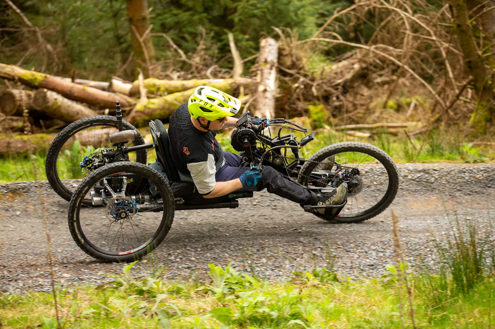
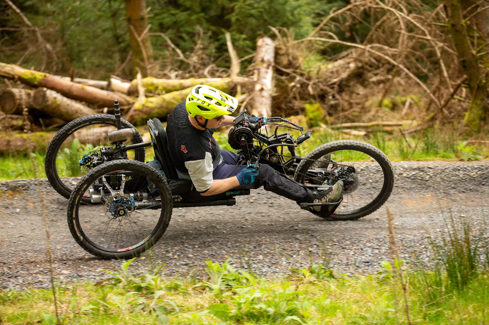
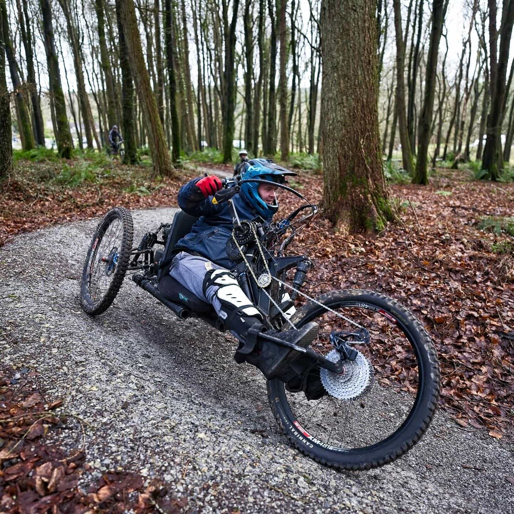
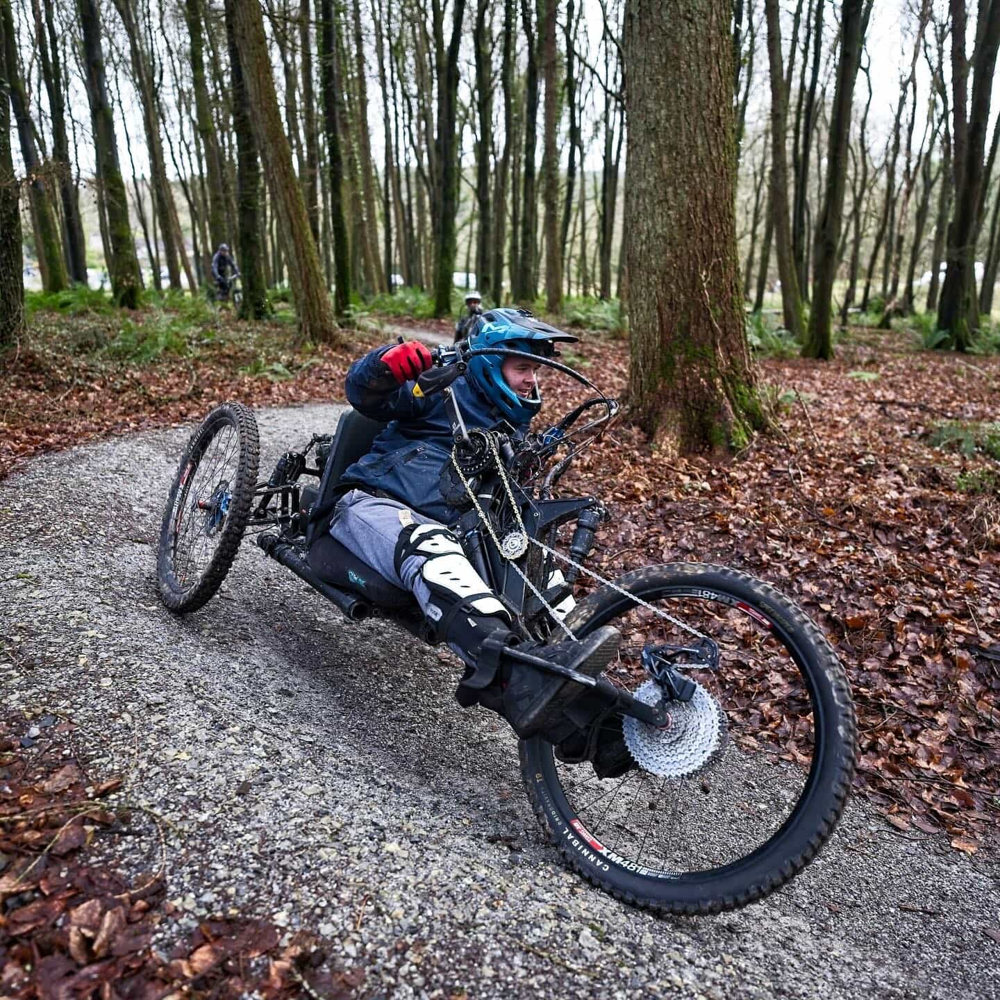

 



is an open source adaptive mountain bike project created for wheelchair users.
The frame concept is based on a modular platform that enables builders to construct and develop their own adaptive MTB cost-effectively.
As the components can be made by any capable machine shop or via online rapid prototyping outlets most parts can be manufactured and delivered almost anywhere in the world. Individuals can customize any element of the frame to suit their specific requirements.
This project is being developed as part of NYU Tandon's VIP program.